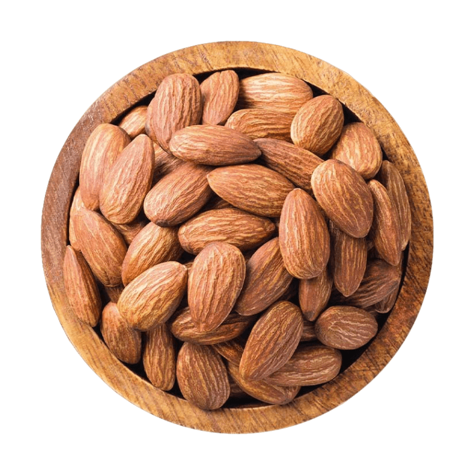

تم إكتشاف أفضل طريقة للتخلص من مشاكل الدوالي و العروق البارزة عند الرجال و النساء
دعونا نعرف أولاً ما هي الدوالي
الدوالي عبارة عن تضخم واحتقان في الأوعية الدموية، وهذه الظاهرة تظهر غالبًا في الأوعية الدموية التي تحمل الدم إلى أماكن مختلفة في الجسم. قد تكون الدوالي مشكلة شائعة لدى الرجال والنساء. تظهر هذه الحالة عندما تضعف الصمامات داخل الأوعية الدموية، مما يؤدي إلى عدم القدرة على منع انسداد الدم وتراكمه في المناطق المعنية.
تعتبر الدوالي ظاهرة طبيعية وشائعة، وتنتج نتيجة للضغط الزائد على الأوعية الدموية أو نتيجة للجاذبية. إلا أن هناك بعض العوامل التي تزيد من احتمالية حدوث الدوالي، بما في ذلك التورم الزائد وقضاء وقت طويل في وضعية جالسة أو وقوفًا. تنتج الدوالي غالبًا في الأوعية الدموية في الساقين، ولكنها يمكن أيضًا أن تظهر في مناطق أخرى من الجسم.
الدوالي يمكن أن تكون مؤلمة وتسبب تورمًا واحمرارًا في المنطقة المصابة. قد تؤدي الدوالي إلى تأثيرات سلبية على جودة الحياة، حيث تجعل الألم والتورم يمكن أن يؤدي إلى عدم القدرة على القيام بالأنشطة اليومية بشكل طبيعي.
تلوث الأردة :
تلوث الأوردة هو مصطلح يشير إلى وجود تضرر أو انسداد في الأوردة نتيجة لتراكم المواد الدهنية (الدهون) داخل الجدران الوعائية. هذا التضرر يمكن أن يسبب العديد من الأعراض والمشاكل الصحية. من أهم الأعراض التي يمكن أن تظهر نتيجة لتلوث الأوردة:
- ألم في المناطق الظاهر بها الدوالي :
- انتفاخ وتورم:
- آلام عند اللمس:
- ضعف الدورة الدموية:
- طفح جلدي:
- تقليل الإحساس أو خدر في المنطقة المتضررة:
يمكن أن يكون هناك ألمًا مزعجًا في المكان الذي تتواجد فيه الأوردة الملتوية أو المتضررة.
يمكن أن يسبب تلوث الأوردة تورمًا في المنطقة المصابة. هذا التورم يمكن أن يكون مرئيًا ويؤدي إلى تورم واحمرار الجلد.
المناطق المصابة قد تصبح حساسة للمس وقد تسبب ألمًا عند لمسها
تلوث الأوردة يمكن أن يؤدي إلى ضعف تدفق الدم في المناطق المصابة، مما يسبب انتفاخًا وتورمًا.
في بعض الحالات، قد يتطور طفح جلدي في المناطق المصابة بسبب تلوث الأوردة. تغير لون الجلد: المناطق المتضررة من تلوث الأوردة قد تصبح لونها أكثر ظلامة أو زرقة.
في بعض الحالات، قد يحدث تقليل في الإحساس أو خدر في المنطقة المصابة.
تلوث الأوردة قد يكون عرضًا لمشاكل أكبر في الجهاز القلبي والوعائي، مثل تصلب الشرايين أو مشاكل القلب.. . لذلك اليوم جئنا لكم بالمنتج الطبيعي و النهائي للتخلص من مشاكل الأوردة و و مشاكل إنسداد الشرايين و القضاء على الدوالي لدى الرجال و الناس .
هذا المنتج هو : "CARDIOFORT "

هو مكمل غذائي في شكل كبسولات يساعد على توقف نمو الدوالي ويعيد ترميم الأوردة بفضل تركيبة الخاصة. "CARDIOFORT " هو تطور فريد من نوعه حصل على رضا كل من إستخدمه. و هو منتج طبيعي تمامًا يستبعد تفاعل الحساسية والمشاكل الأخرى التي قد تنشأ أثناء فترة إستخدامه .
- تدفق الدم الطبيعي في الأوردة.
- التخلص من الدوالي .
- تقليل الألم في الساقين.
- تقليل تطور الجلطات الدموية.
- تحسين وظيفة الصمامات الوريدية.
- القضاء على مشاكل الأنسجة اللينة.
النهج الشامل هو مفتاح النجاح في التخلص من دوالي الأوردة. CardioFort هو أحـد المكونات الهامة لهذا النهج. لا شيء سوى هذا المكمل الغذائي يمكنه القضاء على أعراض الدوالي و مشاكل الأوردة بلطف وفعالية و أيضاً تقوية الأوعية الدموية.
يعتبر المكمل الغذائي CardioFort الذي يستخـدم عن طريق الفم في شكل كبسولات إنه اداة ممتازة للوقاية و التخلص من مشاكل الدوالي المزعجة . سيصبح "شريان الحياة" لك، الذي ينبغي إستخدامه !
إليكم النتائج المرئية لأشخاص حصلوا علي نتائج مذهلة مع "CARDIOFORT " »:
مكونات المنتج طبيعية 100%
- الكستناء
- التوت
- كركم
- الزنجبيل
- نبات الزعرور
- اللوز 

تتميز الكستناء بإحتوائها على العديد من العناصر الغذائية المفيدة جدًا مثل: البوتاسيوم والكالسيوم والعديد من الفيتامينات منها فيتامين ج وفيتامين ب وحمض الفوليك، وهي غنية بالمعادن المختلفة والدهون الغير مشبعة والمفيدة، ممّا يجعل لها دور كبير في وقاية الجسم من العديد من المشاكل الصحية .

مضادات الأكسدة الموجودة في التوت تعزز تدفق الدم في الاوردة و الشرايين . هذا يمكن أن يساعد في تحسين توسيع الأوعية الدموية وتحسين تدفق الدم في الأوعية.
يساهم في تحسين وظيفة الأوعية الدموية عن طريق تعزيز تدفق الدم وتوسيع الأوعية الدموية و خفض ضغط الدم و تحسين مستوى الكوليسترول .

الزنجبيل يحتوي على مركبات مضادة للالتهابات ومضادة للأكسدة، وهذه المركبات قد تساعد في تحسين تدفق الدم وتقليل التورم. بالإضافة إلى ذلك، الزنجبيل يمكن أن يساهم في تحسين صحة الأوعية الدموية بشكل عام.

يساعد في تحسين وظائف القلب و تحسين مستوى الاكسجين في الجسم و وتقليل مخاطر ظهور الدوالي و يساعد في توسيع الأوردة .
اللوز غنية بالدهون الصحية مثل الدهون غير المشبعة والأحماض الدهنية أوميجا-3. هذه الدهون يمكن أن تساعد في زيادة مستويات الكوليسترول الجيد (HDL) في الدم، مما يقلل من تراكم الدهون في الأوعية الدموية ويحسن من صحتها.
عن طريق الضغط علي زر SPRIN في العجلة بالأسفل و هذا عرض مؤقت لفترة محدودة و إذا كنت محظوظاً سوف تحصل علي تخفيض يصل إلي 50% على سعر "CARDIOFORT " .
ملحوظة : الدفع عند الإستلام
للمشاركة في السحب و الحصول علي تخفيض علي "CARDIOFORT " !
جرب حظك!
إضغط علي زر "spin " و جرب حظك

 spin
spin
تهانينا لقد حصلت علي تخفيض 50% علي سعر CARDIOFORT !
كل ما عليك هو انت تكتب اسمك و رقم هاتفك في الخانات أدناه
السعر بعد التخفيض : 5999 D.A
عند شرائك دورة CARDIOFORT
ينتهي التخفيض الخاص بك بعد :
:
التعليقات:
بعد ما رزقت بإبني بدأت مشاكـل رجلي. مش بس كانت بتحرقتي بإستمرار لكن عروقي بدأت "تظهر بشكل سيء من الخارج ". رجلي كانت مغطاه بهذه الدوالي . كانت شكلها بشـع. نصحني زوجي ان استخدم هذا المنتج للتخلص من الدوالي. رأيت أول تأثير في خلال أيام من إستخدام CardioFort . في خلال فترة قصيرة كانت العروق شكلها طبيعي تقريبا و اختفت. وبعد ذلك لاحظـت ان الوجع أيضاً إختفى. رجلي لم تعد تشعر بالثقل ولا تتنفخ تقريبًا. سوف اكمل دورة CardioFort بكل تأكيد و أنصح به الجميع !
الدوالي هي مشكلتي الأبدية! منذ حوالي 10 سنين لم أكن أستطيع أن اتحـرك بدون مسكنات الألم .من بين كل الأشياء التي جربتها ، المكمل الغذائي "CARDIOFORT " هو أحـسن منتج بالفعل للتخلص من الدوالي ليس فقط إستخدامه سهل وسريع الامتصاص، ولكنه يساعد أيضاً على إخفاء الدوالي و هذا بالنسبة لي مذهل ! ! أيضاً اريد ان اؤكد ان هذا المنتج يعطيك الشعور بالنشاط بالساقين و لا تشعر بالثقل .
أستخدمه منذ أسبوعين. لكي أكون صادقاً، لم أكن اتوقع مثل هذه النتائج المذهلة.
كنت في المرحلة المتقدمة من الدوالي وكانت عروقي واضحة جدًا وجلدي جاف. كان الورم والوجع شبه ثابتين. حتى إشترت لي إبنتي هذا المنتج ، و مع ذلك كنت يائسة . استخدمته لفترة يوميًا . والنتيجة فاجأتني. أول شيء لاحظت ان - الساقين اصبحا اكثر نشاطاً . و بعد ذلك بدأ يختفي الوجع تدريجياً . وبعد عدة أسابيع من الاستخدام، بدأت العقد الوريدية تقل. مازلت أستخدم هذا المنتج حتى الأن ، لأنني بكل بساطة أرى النتائج أمام عيني بالفعل !
سوف اطلبه الأن .
أستخدمه حتى الأن منذ اسبوعين و النتائج فوق ما توقعت!
مرحباً. طلبت هذا المنتج لزوجي . لا يمكنني أن أنطق بأي كلمة. النتائج تتحدث عن نفسها و بصراحة منتج مذهل !
مرحباً. طلبت هذا المنتج لزوجي . لا يمكنني أن أنطق بأي كلمة. النتائج تتحدث عن نفسها و بصراحة منتج مذهل !
أستخدمه منذ أسبوع. وأشعر بالرضا حيال النتائج ))
سوف اطلبه أنا ايضا. النتائج لا تصدق! أود الحصول على هذا المنتج. لقد رأيت أن عدد العبوات محدودة، .
سوف اطلبه ايضا! لي ولأمي وجدتي وصديقتي التي تعاني من الدوالي لفترة طويلة ولا شيء يساعدهم ...
اشتريت هذا المُنتج وأشعر أنه يناسبني. كنت أعاني من مشاكل الدوالي من قبل، لم يكن المظهر جيداً جداً لانه كان مقرفاً نظراً لبروز الدوالي و لكن الآن، تغير كل شيء للأفضل شكراً لكم .
بنات، لقد صدمت! نتائج مدهشة!
أعرف بشأن CARDIOFORT لكنني اشتريته عندما كنت في رحلة عمل منذ فترة طويلة. كان مفيداً للغاية. أنصح الجميع بإستعماله .
سوف اطلبه على الفور! أنا بدين أيضًا ... لحسن الحظ، هذا المنتج مناسب أيضًا للرجال.